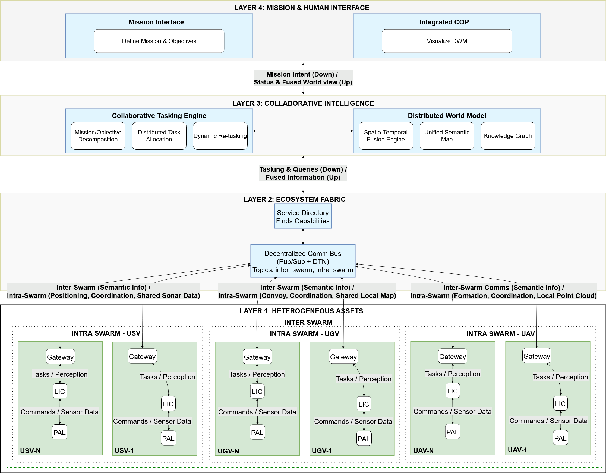

Abstract
Unmanned vehicles (UVs), including aerial (UAVs), ground (UGVs), and sea-based (USVs) systems, are advancing rapidly, where the combined market is projected to go from over $29.3 billion in 2025 to more than $46 billion by 2030 [1]. Despite the market growth, the development occurs in isolated silos. However, real-world missions increasingly demand coordinated operations across multiple UV domains. In this paper, we argue the need for a unified approach to UV development and propose a Synergistic UxV Ecosystem architecture to enable heterogeneous UVs to share information, collaborate, and dynamically allocate tasks. The proposed high-level conceptual framework integrates collaborative intelligence, decentralized communication, and service-oriented design to improve mission effectiveness. We demonstrate how such an ecosystem can enhance situational awareness, adaptability, and operational efficiency, enabling unmanned systems to achieve what isolated entities cannot, through real world inspired scenarios as examples.
Index Terms—Unmanned Vehicles, Autonomous Vehicles, Unmanned Aerial Vehicles, Unmanned Ground Vehicles, Unmanned Surface Vehicles, Ecosystem, Information Fusion.
I. Introduction
Unmanned vehicles (UVs), also known as uncrewed vehicles, operate without a human onboard, either remotely or autonomously. Significant amounts of money, energy, and manpower are invested in making unmanned vehicles autonomous [2] [3] [4]. Unmanned vehicles can be broadly classified into three categories based on the environment in which they operate: Unmanned Aerial Vehicles (UAVs)/Unmanned Aerial Systems (UAS) operate in the air/sky; Unmanned Ground Vehicles (UGVs) operate on the ground/land; and Unmanned Surface Vehicles (USVs) operate in the water/sea. Advancements in these categories often occur independently of one another. For instance, research on UAVs typically focuses on optimizing their operational efficiency. This is not inherently problematic, but in real-life applications, such as military, manufacturing, and transportation, operations involve more than one category of UVs in completing a mission. The different categories of UVs can either complement or compound or contradict each other in achieving the mission at hand. Therefore, aspects of operational efficiency should not be considered in isolation, but rather from the perspective of a broader UxV ecosystem.
Table I shows, how UAVs, UGVs, and USVs are deployed across diverse sectors, including transport, industry, military, and entertainment, each serving a wide range of use cases from combat operations to environmental monitoring.
TABLE I: Structured overview of the application landscape for key unmanned platforms (UAV, UGV and USV).
| Platform | Domain | Applications |
|---|---|---|
| UAV | Transport | Package delivery, Urban Air Mobility, etc. |
| Industrial | Infrastructure inspection, agri-monitoring, etc. | |
| Military | Intelligence, Surveillance, Reconnaissance, etc. | |
| Entertain. | Cinematography, drone racing, light shows, etc. | |
| UGV | Transport | Delivery bots, autonomous transportation, etc. |
| Industrial | Warehouse automation, mining bots, etc. | |
| Military | Combat vehicles, Explosive disposal, etc. | |
| Entertain. | Battle robots, theme park animatorics, etc. | |
| USV | Transport | Autonomous cargo ships, robotic ferries, etc. |
| Industrial | Oceanography, offshore maintenance, etc. | |
| Military | Naval patrol, mine countermeasures, etc. | |
| Entertain. | Autonomous tours, remote boat racing, etc. |
We strongly believe that unmanned vehicles should not evolve in isolated silos, but as part of a unified UxV ecosystem. This approach unlocks new opportunities and applications. We illustrate with cases where siloed deployments underperform, but a coordinated UxV ecosystem succeeds. Consider a forest wildfire where the primary goal is safe evacuation. UGVs may deliver emergency supplies [5] or transport individuals, yet locating people and planning optimal routes remain difficult. Relying only on UGVs limits mission effectiveness. A swarm of UAVs can assist with human localization and route-planning, greatly enhancing UGV performance. This shows how different unmanned vehicles complement one another.
II. Background and Related Works
A. Evolution of Information Fusion
To understand the architectural needs of the ecosystem, information fusion should be seen as a hierarchy of increasing abstraction and intelligence, not a monolithic process. While lower levels are well-studied, the highest level—which we term Mission Intelligence—poses the greatest challenge and promise.
- Intra-Vehicle Fusion: Intra-vehicle fusion creates a robust state estimate for a UV from its noisy and disparate sensors. The goal is to mitigate sensor noise, complement modalities (e.g., IMU and GPS), and manage redundancy to yield an accurate local understanding.
- Intra-Swarm Fusion: This frontier aggregates data from multiple UVs to build a shared tactical picture. A key challenge is data association, determining whether observations from different entities match [8].
- Mission Level Fusion: Our focus, Cross-domain Mission Intelligence, advances from fusing states to abstract concepts such as intent, capability, and causality. It enables heterogeneous UV teams to share a goal-oriented understanding of the mission.
B. State Of The Art
The vision of collaboration of a swarm of cross-domain unmanned vehicles is not new. Few prior works have given the glimpse of its potential. Table II gives a brief comparison of the State Of The Art works.
TABLE II: Comparative Summary of Cross-Domain UxV Systems
| Work / System | UVs | Collaboration | Info Sharing | Info Fusion | Generalizability | Semantic Understanding |
|---|---|---|---|---|---|---|
| Stolfi et al. [11] | UAV, UGV, USV | ✓ | ||||
| Wang et al. [12] | UxV | ✓ | ||||
| JAUS [13] | UxV | ✓ | ||||
| Wu et al. [14] | UAV | ✓ | Intra-swarm | |||
| Xu et al. [15] | UAV, USV | ✓ | Inter-Vehicle | |||
| Ecosystem (Proposed) | UxV | ✓ | ✓ | Mission Level | ✓ | ✓ |
III. Architecture
To give life to the envisioned UxV ecosystem, we propose UxV Ecosystem Architecture, a high-level conceptual blueprint designed for Scalability, Resilience and collaboration despite heterogeneity. The architecture is developed with the following principles: layered abstraction to separate concerns, decentralization to avoid single point of failure, and service oriented design for plug and play modularity.

A. Heterogeneous Asset Layer
This layer consists of physical UxV assets and their software to extend the hardware and provide a baseline autonomy.
B. Ecosystem Fabric
This is the backbone of the ecosystem and it facilitates decentralized communication, and service discovery. It is not a centralized server, but a set of protocols and services that create a unified operational medium for information exchange.
C. Collaborative Intelligence Layer
This is the core of the proposed ecosystem architecture. It transforms raw data and information into a shared understanding and coordinated action. Its processes are distributed, running on nodes that have sufficient computations resources.
IV. Challenges, Opportunities, and Future Work
The proposed UxV Ecosystem represents a shift from siloed autonomy to coordinated, mission-driven collaboration. While promising in concept, its realization introduces technical challenges and opens new research opportunities.
A. Major Challenges
- Scalability and Synchronization: Maintaining a consistent, low-latency DWM across agents requires scalable fusion algorithms and efficient communication protocols.
- Resilience in Adversarial Environments: Ensuring communication and coordination amid jamming, spoofing, or intermittent connectivity demands robust techniques.
- Trust, Security, and Verification: Decentralized architectures face risks of data poisoning and malicious agents. Verifiable task execution, secure data sharing, and distributed trust models are critical.
B. Opportunities for Future Work
- Cross-Domain Missions: The architecture enables heterogeneous teams for tasks like disaster response, infrastructure inspection, and logistics driving new approaches to coordination and planning.
- Open Standards: Defining shared formats for data exchange, task negotiation, and capability description will support interoperability across platforms and vendors.
V. Conclusion
In this paper we identified a critical bottleneck in the current development and deployment of unmanned vehicles (UVs): the siloed nature of information fusion, limited to individual platforms or homogeneous swarms. To address this, we proposed a paradigm shift toward Cross-domain Mission Intelligence, embodied in the UxV Ecosystem architecture. By framing our analysis around an evolutionary hierarchy, from intra-vehicle to intra-swarm to mission-level fusion, we justified the need for a fundamentally new architectural approach. The proposed ecosystem centers on a multi-layered DWM and a Collaborative Intelligence Layer, enabling semantic and relational reasoning essential for coordinated, high-level missions.
Crucially, the architecture moves beyond data exchange to support intent sharing, contextual awareness, and collective decision-making across heterogeneous agents. This work is not a conclusion, but a beginning to a conceptual foundation and a call to action for developing the tools, standards, and algorithms that will realize mission-level autonomy across domains.
References
- Grand View Research, "Unmanned systems market size, share & trends analysis report..."
- J. Deichmann, et al., "Autonomous driving's future: Convenient and connected," McKinsey Center for Future Mobility, Jan 2023.
- D. Chiao, et al., "Autonomous vehicles moving forward: Perspectives from industry leaders," McKinsey & Company, Jan 2024.
- U.S. Army Unmanned Aircraft Systems Center of Excellence, "Eyes of the army: U.s. army unmanned aircraft systems roadmap 2010-2035," Apr. 2010.
- N. B. Roberts, et al., "Current summary of the evidence in drone-based emergency medical services care," Resuscitation Plus, vol. 13, 2023.
- S. Thrun, "Probabilistic robotics," Communications of the ACM, vol. 45, no. 3, pp. 52-57, 2002.
- C. Cadena, et al., "Past, present, and future of simultaneous localization and mapping: Toward the robust-perception age," IEEE Transactions on Robotics, vol. 32, no. 6, pp. 1309-1332, 2016.
- S. Challa, et al., Fundamentals of Object Tracking. Cambridge University Press, 2011.
- P.-Y. Lajoie, et al., "Towards collaborative simultaneous localization and mapping: A survey of the current research landscape," Field Robotics, vol. 2, May 2022.
- S. J. Julier and J. K. Uhlmann, "Using covariance intersection for slam," Robot. Auton. Syst., vol. 55, no. 1, p. 3-20, Jan. 2007.
- D. H. Stolfi, et al., "Uav-ugv-umv multi-swarms for cooperative surveillance," Frontiers in Robotics and Al, vol. 8, p. 616950, 2021.
- Z. Wang, et al., "An interaction framework for multi-domain unmanned systems collaboration based on interoperability messages," in 2022 IEEE 5th International Conference on Electronic Information and Communication Technology (ICEICT), 2022, pp. 152-155.
- D. Kent, et al., “Robotic manipulation and haptic feedback via high speed messaging with the joint architecture for un-manned systems (jaus)," in AUVSI Unmanned Systems Conference, 2024.
- Z. Wu, et al., “A game-based approach for designing a collaborative evolution mechanism for unmanned swarms on community networks," Scientific Reports, vol. 12, no. 1, p. 18892, 2022.
- R. Xu, et al., “A manipulator-assisted multiple uav landing system for usv subject to disturbance," Ocean Engineering, vol. 299, p. 117306, 2024.